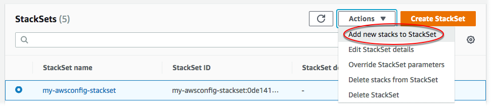
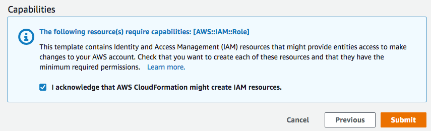

Adicionar pilhas a um conjunto de pilhas
Ao criar um conjunto de pilhas, você pode criar as pilhas para esse conjunto de pilhas. O AWS CloudFormation também permite adicionar mais pilhas, para outras contas e regiões, a qualquer momento depois que a pilha é criada. É possível adicionar instâncias da pilha usando o console do AWS CloudFormation ou usando os comandos do AWS CloudFormation na AWS CLI. Neste procedimento, vamos adicionar instâncias de pilha a uma outra região para o conjunto de pilhas que criamos em Criar um conjunto de pilhas.
Tópicos
Adicionar instâncias de pilha a um conjunto de pilhas usando o AWS Management Console
Abra o console do AWS CloudFormation em https://console.aws.amazon.com/cloudformation
. -
No painel de navegação, escolha StackSets. Na página StackSets, selecione o conjunto de pilhas criado em Criar um conjunto de pilhas.
-
Com o conjunto de pilhas selecionado, escolha Add new stacks to StackSet (Adicionar novas pilhas ao StackSet) no menu Actions (Ações).
 -
Na página Set deployment options (Definir opções de implantação), informe em quais contas e regiões você deseja adicionar pilhas para o seu conjunto de pilhas.
O AWS CloudFormation implantará pilhas nas contas especificadas na primeira região, depois passará para a próxima e assim por diante, desde que as falhas de implantação de uma região não excedam uma tolerância a falhas especificada.
-
[Permissões autogerenciadas] Para Deployment targets (Destinos da implantação), escolha Deploy stacks in accounts (Implantar pilhas em contas). Cole os números da sua conta de destino na caixa de texto, separando-os com vírgulas.
[Permissões gerenciadas pelo serviço] Para Deployment targets (Destinos da implantação), escolha as contas em sua organização nas quais implantar.
-
Escolha Deploy to organization (Implantar na organização) para implantar em todas as contas em sua organização.

-
Escolha Deploy to organizational units (OUs) (Implantar em unidades organizacionais (OUs)) para implantar em todas as contas em OUs específicas. Escolha Add another OU (Adicionar outra OU) e cole o ID da OU de destino na caixa de texto. Repita para cada nova OU de destino. O StackSets também tem como destino OUs filhas dos destinos selecionados.

nota
Se você adicionar uma OU que sua pilha já definiu como destino, o StackSets criará novas instâncias de pilha em todas as contas na OU que ainda não tenham instâncias de pilha de seu conjunto de pilhas (por exemplo, contas que foram adicionadas à OU depois que o conjunto de pilhas foi criado e com implantações automáticas desabilitadas).
-
-
Para Deployment regions (Regiões de implantação), escolha Oeste dos EUA (Norte da Califórnia). Você criará novas pilhas na região Oeste dos EUA (Norte da Califórnia) para as contas especificadas.
Se você adicionar várias regiões, a ordem das regiões em Specify regions (Especificar regiões) determinará a ordem de implantação.
-
Em Deployment options (Opções de implantação):
-
Em Maximum concurrent accounts (Máximo de contas concorrentes), mantenha os valores padrão de Number (Número) e 1.
Isso significa que o AWS CloudFormation implantará sua pilha em apenas uma conta de cada vez.
-
Em Failure tolerance (Tolerância a falhas), mantenha os padrões de Number (Número) e 0.
Isso significa que, no máximo, uma implantação de pilha poderá falhar em uma das suas regiões especificadas para que o AWS CloudFormation interrompa a implantação na região atual e cancele a implantação nas regiões restantes. Se você quiser que o CloudFormation seja mais tolerante a falhas, aumente esse valor.
Escolha Next (Próximo).
-
-
-
Na página Specify Overrides (Especificar substituições), deixe os valores da propriedade conforme especificados. Você não substituirá nenhum valor de propriedade para as pilhas que criará. Escolha Next (Próximo).
-
Na página Revisão, revise suas escolhas e as propriedades do seu conjunto de pilhas. Para fazer as alterações, escolha Editar na área em que você deseja alterar as propriedades. Antes de poder criar as novas pilhas, é necessário marcar a caixa de seleção na área Capabilities (Recursos) para confirmar que alguns dos recursos que você está criando com o conjunto de pilhas podem exigir novos recursos e permissões do IAM. Para obter mais informações sobre as permissões que poderão ser necessárias, consulte Reconhecer recursos do IAM em modelos do AWS CloudFormation, neste guia. Quando estiver pronto para criar suas instâncias da pilha, escolha Submit (Enviar).
 -
O AWS CloudFormation começa a criar suas instâncias da pilha. Visualize o progresso e o status da criação das instâncias da pilha em seu conjunto de pilhas na página de detalhes do conjunto de pilhas que é aberta ao escolher Submit (Enviar). Quando estiver concluído, as novas instâncias da pilha deverão estar listadas na guia Stack instances (Instâncias da pilha).

Adicionar instâncias de pilha a um conjunto de pilhas usando o AWS CLI
Ao atuar como administrador delegado, você deve definir o parâmetro --call-as como DELEGATED_ADMIN todas as vezes que executar um comando StackSets.
--call-asDELEGATED_ADMIN
-
Abra a AWS CLI.
-
Execute o comando
create-stack-instances.[Permissões autogerenciadas] Forneça os IDs de contas nas quais você deseja criar instâncias de pilha.
aws cloudformation create-stack-instances --stack-set-namemy-awsconfig-stackset--accounts '["account_id"]' --regions '["eu-west-1", "us-west-2"]'[Permissões gerenciadas pelo serviço] Forneça o ID da organização (raiz) ou os IDs das OUs para as quais você deseja criar instâncias de pilha. Neste exemplo, especificamos OUs com os IDs
ou-rcuk-slr5lh0aeou-rcuk-1x5j1lwo.aws cloudformation create-stack-instances --stack-set-nameStackSet-myApp--deployment-targets OrganizationalUnitIds='["ou-rcuk-r1qi0wl7"]' --regions '["eu-west-1", "us-west-2"]'nota
Se você adicionar uma OU que sua pilha já definiu como destino, o StackSets criará novas instâncias de pilha em todas as contas na OU que ainda não tenham instâncias de pilha de seu conjunto de pilhas (por exemplo, contas que foram adicionadas à OU depois que o conjunto de pilhas foi criado e com implantações automáticas desabilitadas).